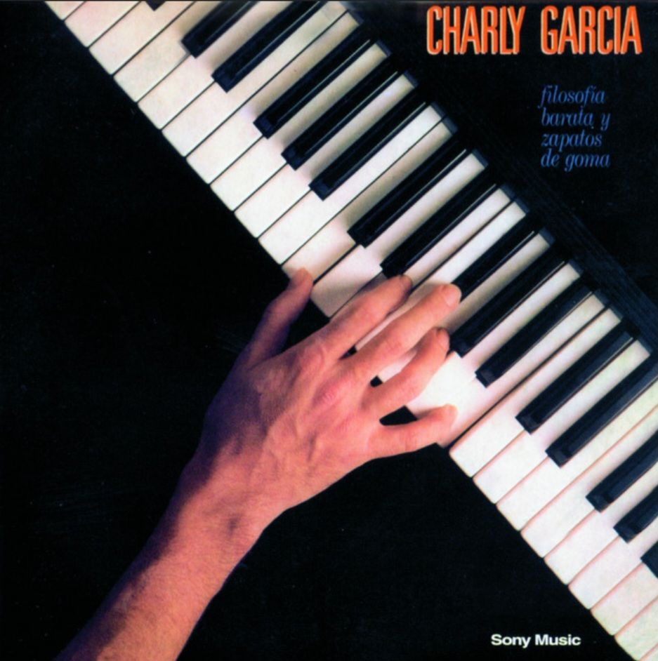

Cada vez que respiro es como si el vacío me entrara en el pecho donde ya no estás. (span con estilo de class="claseResaltado")
"Tu alma es extraordinaria, quiere saber ser el tiempo, y no quieren saber de mirar relojes tus ojos claros de sol a sol. Una extraña razón nos mantiene aquí en el dulce esplendor. Y tu mañana única espera la vida como el arroyo que horada la piedra por siglos"
"Quizás porque no soy de la nobleza puedo nombrarte mi reina y princesa, y darte coronas de papel de cigarrillo" (estilo de class="claseResaltado")
What if she's fine? It's my mind that's wrong. And I just let bad thoughts linger for far too long (estilo de class="claseDarkRed")
"Te suplico que me avises si me vienes a buscar... no es porque te tenga miedo, solo me quiero arreglar" (estilo de class="claseComun")
I should have loved a thunderbird instead; At least when spring comes they roar back again. I shut my eyes and all the world drops dead. I think I made you up inside my head. (estilo de id="idIndigo")
